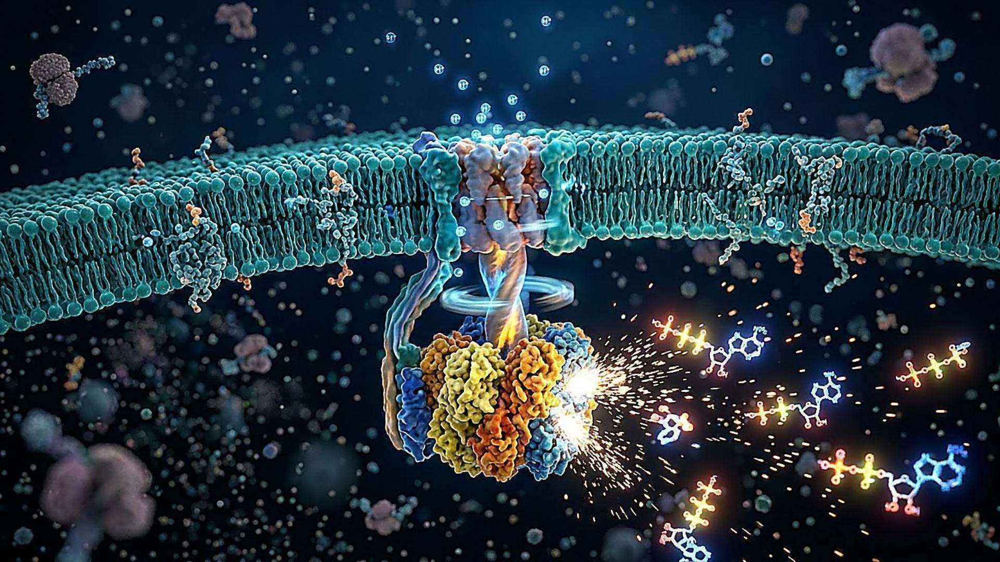
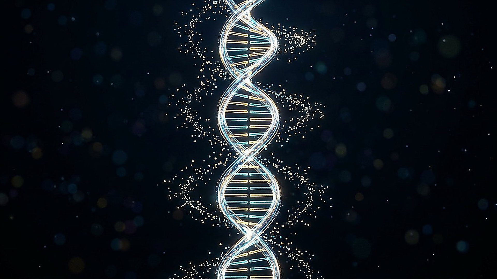

Aile VIII — Galerie 23
Systèmes du vivant
Psaume 104:24
3 merveilles illustrées, chacune avec sa reconstitution numérique et ses références scientifiques. Leur vérification détaillée se poursuit.
Choisir parmi les huit galeries
Écouter la galerie
Lire la transcription
Bienvenue dans la galerie des systèmes du vivant. À toutes les échelles, la vie repose sur des transformations, des échanges et des formes d'organisation que les chercheurs étudient avec patience. Prenons d'abord la luciole. Sa lumière provient d'une réaction chimique dans laquelle interviennent notamment une molécule appelée luciférine et une enzyme. Le résultat est une émission lumineuse remarquable. Mais attention : le rendement d'une étape de la réaction ne décrit pas, à lui seul, tout le bilan énergétique de l'animal. La surface de la lanterne a également inspiré des recherches sur l'extraction de lumière des diodes. Dans une cellule, d'autres transformations se produisent sans cesse. Une enzyme appelée ATP synthase participe à la fabrication d'une molécule utilisée pour transférer de l'énergie. Certaines parties de cet ensemble tournent : c'est un moteur moléculaire dont le fonctionnement a été observé dans des conditions expérimentales précises. Nous découvrons aussi l'ADN, support d'une information biologique. Les chercheurs ont appris à encoder des fichiers numériques dans des molécules synthétiques, mais ces expériences ne signifient pas que la cellule fonctionne comme un ordinateur ordinaire. Chaque comparaison éclaire une propriété et laisse aussi des différences importantes. En parcourant cette galerie, posez-vous une question simple : qu'a-t-on réellement observé, et que reste-t-il à comprendre ? L'attention aux détails ne diminue pas l'émerveillement ; elle lui donne de la profondeur. Pour aller plus loin, ouvrez les fiches et leurs sources. Les observations, les modèles et les applications ne répondent pas aux mêmes questions. Les chiffres dépendent des espèces et des conditions étudiées. Lorsque les chercheurs hésitent encore, cette incertitude mérite d'être dite. Bonne visite, et prenez le temps d'observer.
Le rotor qui recharge le vivant

La merveille
Presque chaque cellule abrite une minuscule machine tournante qui recharge sans cesse la monnaie énergétique du vivant : l'ATP. On l'observe comme un moulin moléculaire : un flux de protons fait tourner un premier rotor, et ce mouvement entraîne un second moteur qui recoud un phosphate sur l'ADP usée. Les deux parties sont mécaniquement couplées et transmettent le mouvement par un axe commun.
Comment ça marche
Un flux de protons traverse le moteur FO ancré dans la membrane ; son rotor tourne et entraîne, par un axe élastique, le moteur F1 qui synthétise l'ATP. La transmission élastique du couple permet aux deux moteurs de transmettre le mouvement de façon coordonnée, tout en autorisant des rapports d'engrenage différents selon les organismes.
- 2 moteurs rotatifs couplés dans une seule machine (FO et F1)
- 10 sous-unités c dans l'anneau du rotor (levure, cristallographie 1999)
- 3 sites catalytiques dans la partie F1
EXPLORATION INTERACTIVE · 3 ÉTAPES
Suivre le mouvement de l’ATP synthase
Choisissez une étape pour en découvrir le rôle. Cette séquence est une représentation pédagogique, non une simulation quantitative.
Utilisez les touches fléchées pour changer d’étape au clavier.
Ce que l'homme en tire
Comprendre ce rotor guide la conception de nanomachines et de catalyseurs biomimétiques ; aucun procédé industriel ne copie encore ce moteur : statut de recherche fondamentale et appliquée.
Statut : RECHERCHE
Le saviez-vous ?
Ce moteur peut-il tourner à l'envers ?
Oui : isolé, le moteur F1 sait hydrolyser l'ATP pour faire tourner le rotor en sens inverse. La même machine fonctionne donc tantôt comme moteur, tantôt comme générateur, selon le sens du flux de protons.
Réflexion
Psaume 104:24
Une machinerie assez petite pour tenir dans une cellule, assez précise pour la recharger à chaque seconde de sa vie.
Sources
- Junge W., Nelson N. (2015), « ATP synthase », Annual Review of Biochemistry 84:631–657 — DOI 10.1146/annurev-biochem-060614-034124
- Stock D., Leslie A.G.W., Walker J.E. (1999), « Molecular architecture of the rotary motor in ATP synthase », Science 286:1700–1705 — DOI 10.1126/science.286.5445.1700
Voir aussi
La lumière qui sépare l’eau L'archive qui tient dans un grain
La luciole et sa lanterne
La merveille
Par les nuits d’été, certaines lucioles émettent des signaux lumineux grâce à une réaction chimique. Dans la lanterne de certaines lucioles du genre Photuris, la surface présente aussi des reliefs qui facilitent la sortie de la lumière. Ce sont deux phénomènes distincts : produire la lumière, puis la laisser traverser la cuticule.
Comment ça marche
La luciférase active la luciférine avec l’ATP et l’oxygène ; un produit excité émet un photon en revenant à un état d’énergie inférieur. Ando et ses collègues ont estimé un rendement quantique maximal de 41,0 ± 7,4 % dans leur système expérimental. Chez Photuris, la cuticule au-dessus de la lanterne présente des reliefs à profil dentelé ; une équipe s’en est inspirée pour étudier la sortie de lumière d’une diode.
- 41,0 % rendement quantique maximal estimé dans la mesure d’Ando et al., avec une incertitude de ± 7,4 points
- 55 % gain maximal d’extraction simulé pour une géométrie de diode comparée à une diode non traitée
- 68 % augmentation de puissance lumineuse au pic mesurée pour deux diodes de laboratoire aux revêtements différents
- 2 diodes comparées dans cet essai expérimental de Bay et al.
Ce que l'homme en tire
Bay et ses collègues ont fabriqué un revêtement microstructuré inspiré de Photuris sur une diode au nitrure de gallium. La simulation et l’essai utilisent des références différentes : leurs gains ne sont pas interchangeables. Il s’agit d’une démonstration expérimentale, pas d’un gain garanti pour toute lampe commerciale.
Statut : PROTOTYPE
Le saviez-vous ?
Une lumière dite froide signifie-t-elle que toute l’énergie devient lumière ?
Non. Le rendement quantique décrit un nombre de photons par réaction, pas directement la part de l’énergie totale convertie en lumière. La réaction et la sortie des photons sont deux étapes différentes.
Question honnête
La valeur de 41 % est une estimation pour une réaction de laboratoire, non une constante universelle chez toutes les lucioles. La comparaison de deux diodes ne garantit pas une amélioration identique dans tous les dispositifs.
Réflexion
Psaume 104:24
Une petite lumière compose des signaux dans la nuit.
Sources
- Ando Y., Niwa K., Yamada N., Enomoto T., Irie T., Kubota H., Ohmiya Y. et Akiyama H. (2008), « Firefly bioluminescence quantum yield and colour change by pH-sensitive green emission », Nature Photonics 2:44–47 — DOI 10.1038/nphoton.2007.251
- Bay A., André N., Sarrazin M., Belarouci A., Aimez V., Francis L. A. et Vigneron J. P. (2013), « Optimal overlayer inspired by Photuris firefly improves light-extraction efficiency of existing light-emitting diodes », Optics Express 21:A179–A189 — DOI 10.1364/OE.21.00A179
Voir aussi
Le rotor qui recharge le vivant La lampe vivante du calmar d’Hawaï
L'archive qui tient dans un grain

La merveille
Les séquences de bases de l’ADN portent une partie de l’information du vivant. En 2017, des chercheurs ont encodé sur de l’ADN synthétique un système d’exploitation, un film et d’autres fichiers, puis récupéré les 2,14 millions d’octets sans erreur dans leur essai.
Comment ça marche
L'architecture « DNA Fountain » découpe les données en gouttes redondantes (codes fontaine), traduites en séquences de bases puis réassemblées au séquençage : la redondance rend la lecture robuste même après des amplifications répétées.
- 2,14 × 10⁶ o octets encodés puis relus sans erreur (OS complet, film…)
- 215 Po/g densité de stockage démontrée, en pétaoctets par gramme d'ADN
- 2,18 × 10¹⁵ récupérations possibles estimées grâce au procédé testé, non lectures toutes réalisées
- 1,98 bit/nt potentiel de codage par nucléotide sous contraintes biochimiques ; pas le rendement global
Ce que l'homme en tire
Archivage à très long terme (patrimoine, données scientifiques) : prototypes industriels et projets pilotes existent ; le coût de synthèse et de lecture réserve encore l'usage aux archives froides.
Statut : PROTOTYPE
Le saviez-vous ?
Combien de temps l'ADN conserve-t-il l'information ?
Au sec et au froid, des millénaires : c'est ainsi qu'on relit des génomes anciens. D'où la promesse d'archives qui survivraient à tous nos supports magnétiques — à condition que quelqu'un sache encore les lire.
Réflexion
Psaume 104:24
La capacité de l’ADN à porter de l’information invite à réfléchir à l’organisation du vivant.
Sources
- Erlich Y., Zielinski D. (2017), « DNA Fountain enables a robust and efficient storage architecture », Science — DOI 10.1126/science.aaj2038
Voir aussi
Deux cents métiers, un seul plan Le rotor qui recharge le vivant